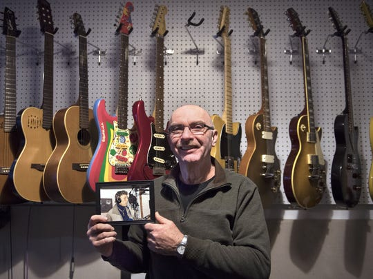

Highland House is a full service digital recording studio with on board automated mixing using a Mackie DXB 72 input console. We record on Mac computers running Digital Performer with all the Universal Audio plug ins. Our microphone selection is by far the best in West Tennessee toped off by a pair of U87's. Other mics include EV, AKG, Shure, Audix, Audio Technica. We have a real Hammond B3 and Leslie and assorted pro guitars and amps by Fender, Marshall, Vox and Blackfoot Custom Amps. Neve , Focusrite, Altec, Empirical Labs, Blackfoot custom mic press, eqs and compressors. Yamaha Maple Custom drums. We also have a great deal of experience a nd knowledge, after all those are the real items our clients seek. We work with local and national artists, producers and songwriters from all genres. Wes has produced and or played guitar on over 200 Cd projects and continues to be an "in demand" session player as well as consultant for sound installa tions and provides sound systems for events with up to 10,000 guests!
